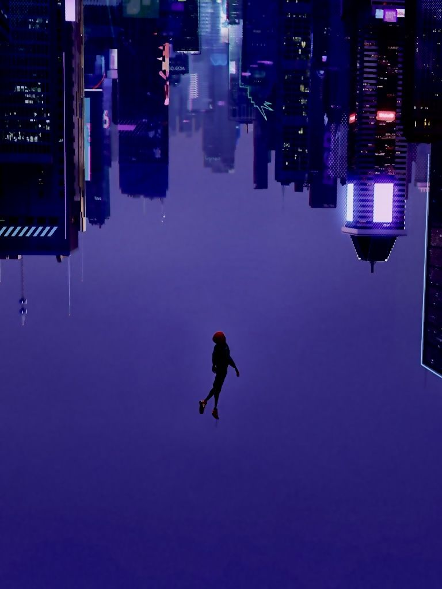
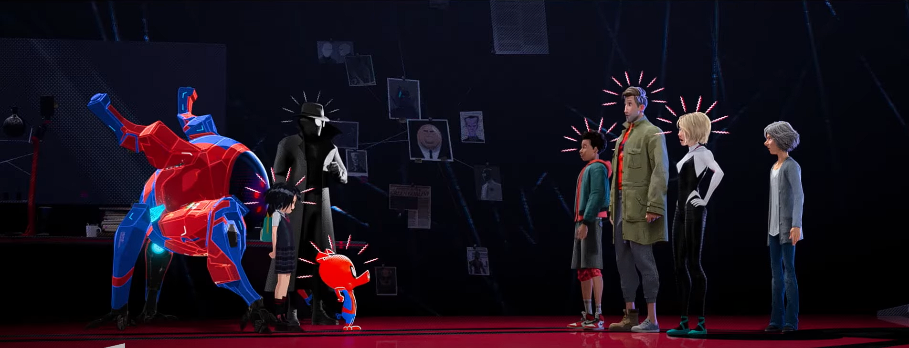

Cenas Marcantes



O adolescente Miles Morales se torna o Homem-Aranha e precisa dominar seus poderes para salvar o multiverso. Com a ajuda de versões alternativas do Homem-Aranha, ele deve impedir uma ameaça que poderia destruir toda a realidade.
Em Homem-Aranha no Aranhaverso, Miles Morales é um adolescente comum que vive em Nova York. Após ser picado por uma aranha geneticamente modificada, ele adquire poderes extraordinários e se torna o novo Homem-Aranha.
Quando o Rei do Crime ativa um supercolisor, ele abre portais para outras dimensões, trazendo versões alternativas do Homem-Aranha para o universo de Miles. Juntos, eles devem impedir que o colisor seja reativado, o que destruiria o multiverso.
O filme revolucionou a animação com seu estilo visual único, combinando diferentes técnicas e referências dos quadrinhos. A história explora temas de identidade, responsabilidade e legado, enquanto Miles descobre o que significa ser um herói.
Shameik Moore
Um adolescente que se torna o novo Homem-Aranha em seu universo. Precisa aprender a controlar seus poderes enquanto lida com as expectativas de ser um herói.
Jake Johnson
Uma versão mais velha e cínica do Homem-Aranha que se torna mentor de Miles. Está em um momento difícil de sua vida e carreira como herói.
Hailee Steinfeld
A Mulher-Aranha de outra dimensão. É uma versão alternativa de Gwen Stacy que se tornou uma heroína após eventos trágicos em seu universo.
Liev Schreiber
O principal vilão do filme, que constrói um supercolisor para acessar outras dimensões, ameaçando destruir o multiverso.
Vencedor do Oscar de Melhor Filme de Animação, sendo o primeiro filme não produzido pela Disney/Pixar a ganhar o prêmio desde 2011.
Vencedor do Globo de Ouro de Melhor Filme de Animação, superando favoritos como "Incríveis 2" e "WiFi Ralph".
Vencedor do BAFTA de Melhor Filme de Animação, consolidando seu sucesso crítico internacional.
Vencedor de 7 Annie Awards, incluindo Melhor Filme de Animação, Melhor Direção e Melhor Roteiro.